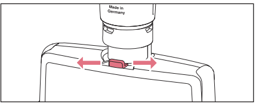
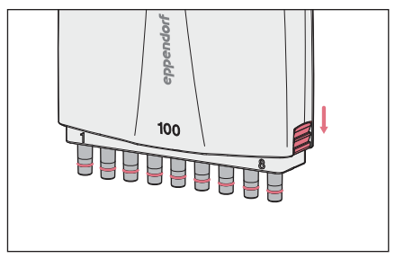
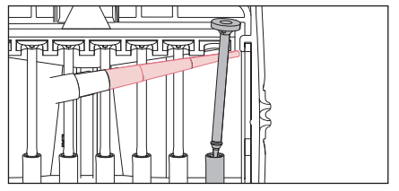
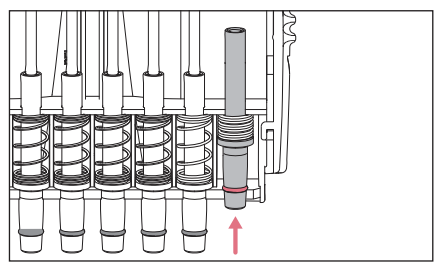
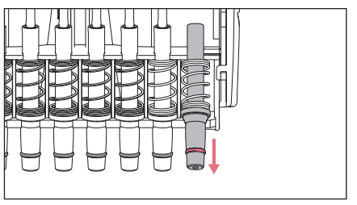

Pipette Decontamination
So, (Captain America pulls up a chair) you’ve accidentally sucked some sample up into the pipette comb, contaminating the inside of the pipette. You can’t keep using that pipette without possibly contaminating other samples. Not to worry, you can disassemble, decontaminate, autoclave, and reassemble the pipette. Here’s how.
Reference: Eppendorf Pipettes User Manual
Before Decontamination
Label the pipette with tape that says it’s contaminated and the date of contamination to let other lab members know not to use it.
Hang the pipette seperately from the uncontaminated ones. You can hang it off one of the lab shelves above the benches.
Disassembling the Pipette for Decontamination
Ref. pages: 21-29
Single Channel
Multichannel
- Set the pipette volume to the highest end of its range (the nominal value)
- For example, on the 20-300 uL pipette, set the volume to 300 uL
- There’s a lever at the base of where the pipette handle meets the lower part with the combs. Push it to one side and hold it there to remove the lower part from the handle.

- On the right and left sides of the lower part, there are two locking mechanisms. With the lower part hanging combs-down, push both locking mechanisms down. You can now remove the cover plate of the pipette combs.

- When you open the pipette, you’ll see the row of tip cones with pistons. Gently remove each piston. First pull the top of the piston forward, then pull it up and out of the tip cone.

- Remove the tip cones. Push one cone up into the pipette until you can pull the bottom part of the cone forward and out of the rack. The cones are spring-loaded, so do this step slowly to avoid the cone being flung out of the rack.

- Pull the rest of the tip cone along with the spring out of the rack.

Decontamination
Using a kimwipe, gently wipe any grease off of the pistons.
Place the tip cones and pistons in a 10% bleach bath for 30 min. See this protocol for how to make the bath. 100 mL of the bath placed in one of the larger plastic weigh boats should be enough to submerge the pipette parts.
- Remove the springs from the tipcones before placing the cones in the bath. Bleach causes metal to rust, so don’t put the springs in the bath.
Make sure all cones and pistons are completely submerged and that the interiors of the cones have no air bubbles. Generally, if the cones are sitting on the bottom of the boat and aren’t floating, there likely aren’t bubbles in them. If they’re floating, try to gently tap the cone against the bottom of the boat to release bubbles.
After 30 min, remove the cones and pistons from the bath and rinse them well in DI water. You can fill another weigh boat with DI water and rinse each piece in that bath.
Autoclaving
The entire pipette is able to be autoclaved, including the handle and the lower part with the tip cones. Place the pistons, tip cones, and springs into a glass beaker to autoclave them. The rest of the pipette can simply be autoclaved as is.
Autoclave at 121 degrees C for 40 min, allowing 20 extra minutes for depressurization.
Make sure the pipette is completely dry before reassembling it. You may want to allow the pipette to dry overnight to be sure.
Reassembly
For both the single and multichannel pipettes, simply follow the steps for disassembly in reverse.
Once reassembled, remove the tape marking the pipette as contaminated, and replace it with one that says “Needs calibration check.” During the decontamination process, the pipette may have become uncalibrated. You will need to check its accuracy.
Checking Pipette Accuracy
Perform a water measurement test using the pipette, tap water, and the scale.
1 ml of water = 1 gram. 1 uL of water = 1 mg. Set the pipette to a certain volume, pipette up some water, and then pipette it onto a tared weighboat on the scale. The scale should read a mass that matches the volume of water as described in the equations above.
- For example, 300 uL water should measure to 300 mg or 0.3 grams on the scale.
The scale is accurate to +/- 2 mg or +/- 0.002 g. Measure out the same volume of water several times in a row and see if its mass is within that error range of the true mass.
- For example, if measuring out 300 uL water, measure out that volume of water several times in a row to see if the mass comes out to 298 mg - 302 mg consecutively.
If you can do this, the pipette does not need to be recalibrated. If not, mark the pipette with tape as being uncalibrated and ask Katie to schedule recalibration.